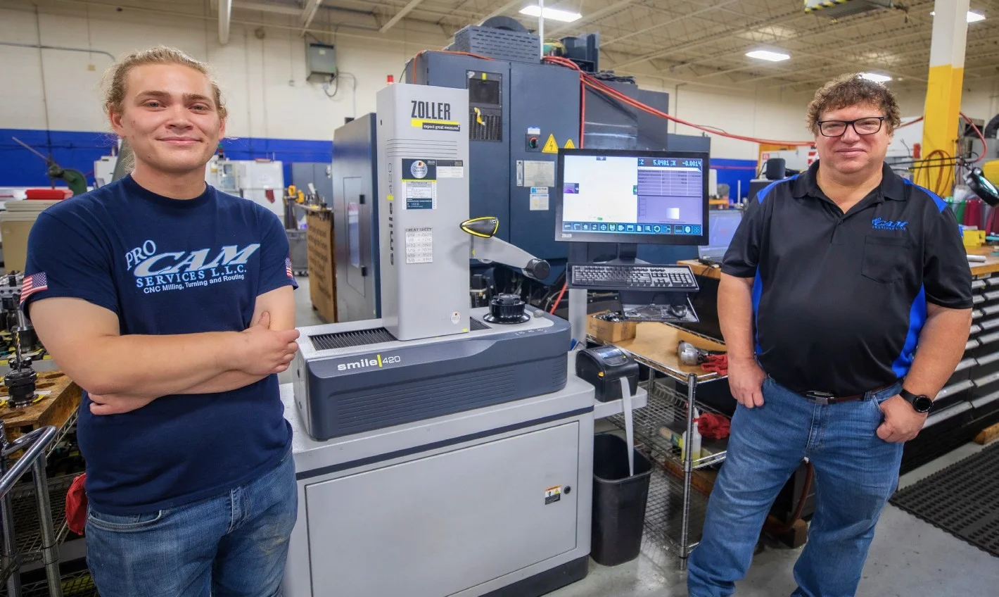
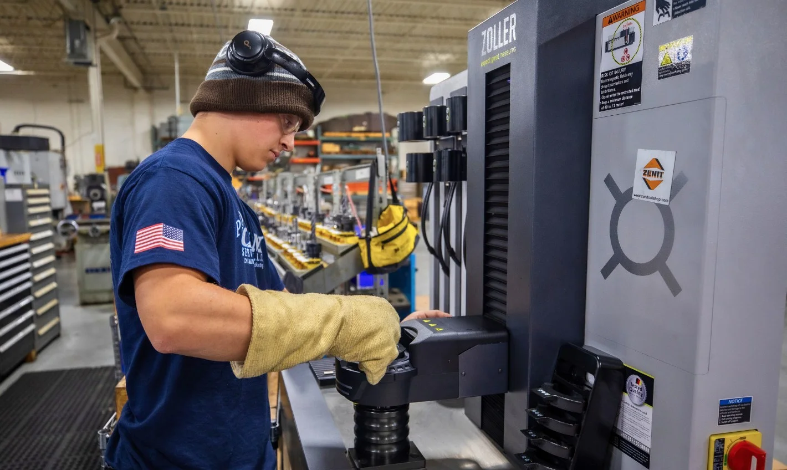
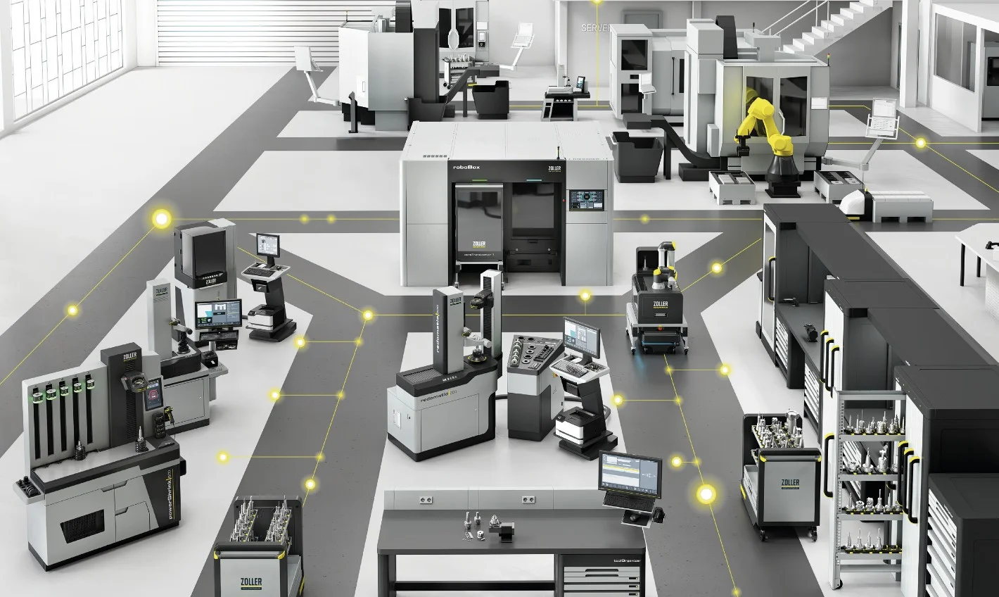

La inversión en un dispositivo de preajuste de herramientas vale la pena
Si se pregunta a un grupo de propietarios de empresas de mecanizado cuáles son sus objetivos, es probable que todos quieran reducir los tiempos de preparación, acelerar los cambios de configuración y aumentar el tiempo de funcionamiento de las máquinas.
Sin embargo, si se les pregunta a esos mismos empresarios qué tecnologías utilizan para trabajar de manera más eficiente, las respuestas son muy variadas.
Dado que la persistente escasez de mano de obra calificada en la industria manufacturera aviva el interés por soluciones que aumenten la productividad, cada vez más pequeñas y medianas empresas reconocen el potencial de ahorro que ofrecen los dispositivos de preajuste de herramientas. Estos sistemas de medición externos registran la longitud, el diámetro y el desplazamiento de las herramientas antes de que estas se monten en la máquina.
«No es raro encontrarnos con propietarios de talleres que creen erróneamente que los dispositivos de preajuste no son para ellos», explica Dietmar Moll, director de ventas de ZOLLER Inc. en Ann Arbor, Míchigan. «Pero tan pronto como el equipo está en su taller y ven los resultados, a menudo solo escuchamos: “Ojalá lo hubiéramos comprado antes”».
Eso mismo le sucedió a ProCam Services LLC, una empresa familiar de subcontratación CNC que Tom Bassett II fundó hace casi 30 años en el oeste de Michigan. Aunque al principio se mostraba escéptico respecto a los dispositivos de preajuste, sus dudas se disiparon rápidamente después de que, hace unos cinco años, comprara el ZOLLER »smile 420« y lo integrara en el flujo de trabajo de su empresa, que opera a plena capacidad.
El dispositivo mide herramientas de corte con precisión en el rango de los micrómetros, y lo hace en pocos minutos. Las pruebas internas de ZOLLER demuestran que la medición con un dispositivo de preajuste es al menos un 45 % más rápida que a través del control de la máquina. El ajuste externo alivió la carga de trabajo de los operadores de las máquinas, quienes antes dedicaban un valioso tiempo de funcionamiento del husillo a la palpación de las herramientas. Ahora, un operador puede medir las herramientas para el siguiente trabajo mientras la máquina sigue en funcionamiento, lo que le permitió a ProCam ganar tiempo de producción adicional.
Ya en el primer año tras la introducción del dispositivo de preajuste (2019), las ventas aumentaron en 300 000 dólares estadounidenses, y al año siguiente en otros 700 000 dólares estadounidenses. Bassett atribuye la mayor parte del aumento de 1 millón de dólares a procesos más eficientes y a una mayor productividad de las máquinas.
«No creo haber comprado nunca un equipo que haya cambiado nuestro trabajo de manera tan fundamental», dice Bassett. «Hay muchas cosas en las que uno piensa: “Deberíamos haber comprado esto antes”, pero nada tuvo un impacto tan grande como el ZOLLER».
No creo que haya comprado nunca un dispositivo que haya cambiado nuestro trabajo de manera tan radical
 Tom Bassett II
Tom Bassett IIFundador de ProCam Services LLC
¿Son adecuados los dispositivos de preajuste para operaciones de alta variedad y bajo volumen?
La opinión actual de Bassett difiere notablemente de la que tenía anteriormente. Durante mucho tiempo estuvo convencido de que los dispositivos de preajuste no eran adecuados para empresas con muchos pedidos pequeños y variados, y con cambios frecuentes.
Desde su fundación en 1995, ProCam se ha posicionado como un fabricante por encargo flexible que destaca por sus plazos de entrega cortos y la máxima calidad. Los empleados procesan diariamente entre 20 y 30 pedidos diferentes, para sectores que van desde la industria aeroespacial hasta la automotriz y la agricultura.
La planta, de 3.500 m², cuenta con ocho fresadoras (máquinas de 3, 4 y 5 ejes, verticales y horizontales), tres tornos —entre ellos uno de seis ejes— y dos centros de fresado CNC. Este equipamiento permite una flexibilidad máxima para los más diversos materiales y tamaños de lotes.
«Algunos clientes llaman por la mañana porque su equipo está parado, y por la tarde ya les entregamos la pieza de repuesto», dice Bassett. «Por lo general, solo tenemos un retraso de unas dos semanas, porque procesamos los pedidos muy rápido».
Cada minuto que se pierde en la preparación es un minuto en el que la máquina no genera ingresos. No es de extrañar, pues, que según la encuesta Top Shops Survey 2019 de Gardner Intelligence, las empresas más rentables utilicen con mayor frecuencia dispositivos de preajuste. Según este estudio, el 55 % de las empresas con más de 180 000 dólares de facturación por empleado (un indicador de alta rentabilidad) utiliza un dispositivo de preajuste, frente a solo el 29 % de las empresas menos rentables.
Bassett hizo sus propios cálculos: ¿cuánto tiempo dedica su equipo cada día a la calibración de las herramientas y al control de concentricidad? El resultado: de 30 a 60 minutos por trabajo. Multiplicado por el número de pedidos por día y por hora de máquina, el resultado fue una enorme pérdida de tiempo —y unos costos de oportunidad igualmente elevados—. «Al principio pensé que no podía ser cierto», recuerda. «Pero luego quedó claro: simplemente tenemos que tener este dispositivo».

Precisión y repetibilidad
Hoy en día, el preajuste de las herramientas con el »smile 420« es el primer paso de cada trabajo en ProCam. Además del considerable ahorro de tiempo, el dispositivo ofrece una repetibilidad que no se puede lograr manualmente. El husillo SK-50 de alta precisión, la óptica y la cámara de procesamiento de imágenes proporcionan datos exactos en cada medición.
«Antes teníamos grandes desviaciones entre los turnos», cuenta Bassett. «El turno diurno mide de manera diferente al turno nocturno, y ya surgen problemas de calidad o trabajo de repaso. Con el ZOLLER eso ya no pasa, porque cada medición es idéntica».
Los datos de medición se transfieren automáticamente al control de la máquina, lo que descarta los errores de digitación. Bassett incluso desarrolló su propio programa para transferir los datos a varias máquinas al mismo tiempo. «Hoy en día, el sistema está tan profundamente integrado en nuestro proceso que somos mucho más flexibles que antes», dice. «Ya no puedo imaginarme trabajar sin él».
Convencer a los empleados del valor agregado
Aunque las cifras eran convincentes, Bassett también tuvo que convencer a sus operarios del nuevo sistema. Hasta entonces, cada uno utilizaba sus propios métodos: con calibres de espesores, bloques 1-2-3 o tiras de papel.
«Cuando verifican la concentricidad, les lleva de uno a cinco minutos por herramienta; con 15 herramientas por pedido, eso suma rápidamente 45 minutos», explica Bassett. «Con ZOLLER terminamos en menos de cinco minutos».
Un empleado especialmente escéptico pudo hacer la comparación: debía palpar sus herramientas «a la antigua» y comparar los resultados con los del preajustador. «Le dije: demuéstrame que el dispositivo está equivocado», recuerda Bassett riendo. «Al cabo de una semana, ya no palpaba nada manualmente».
Hoy en día, todo el equipo confía en el »smile 420«. «Simplemente nos quita trabajo», dice Alex Bassett, jefe de turno e hijo del fundador de la empresa. «Uno tiene tantas cosas en la cabeza que es bueno saber que el ZOLLER está en lo cierto. Eso nos da tranquilidad y seguridad».

Más que un simple dispositivo de preajuste: un socio de confianza
Además del dispositivo de preajuste, Bassett ha adquirido entretanto portaherramientas ZOLLER y, tras la IMTS 2022, la máquina de termocontraer »powerShrink 600«. «Aún estamos en la fase inicial, pero ya vemos mejoras significativas en la vida útil, así como en las velocidades de corte y los avances», afirma. «La vida útil de nuestras herramientas se ha cuadruplicado aproximadamente».
Alex Bassett también está entusiasmado: «La herramienta funciona de manera más estable, sin oscilaciones ni marcas de vibración; las superficies son notablemente mejores. Simplemente tiene un efecto positivo en todo».
Según Dietmar Moll, tras adquirir un preajustador, muchas empresas descubren otras soluciones de la cartera de ZOLLER que mejoran aún más sus procesos. «El preajustador ofrece la mejor relación costo-beneficio: una inversión baja, un gran efecto», afirma Moll. «Pero con ZOLLER no solo se compra un equipo, sino que se obtiene acceso a un ecosistema completo de soluciones de fabricación inteligentes, y a un socio sólido que contribuye al éxito del cliente».